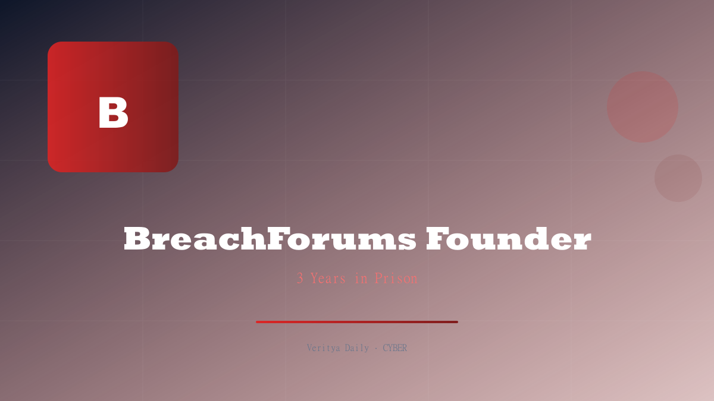

BreachForums Founder Gets 3 Years

Key Takeaways
- Conor Brian Fitzpatrick (alias "Pompompurin"), 22, was resentenced to 3 years in federal prison
- Pleaded guilty to access device conspiracy and CSAM possession
- Forfeited 100+ domain names, a dozen devices, and cryptocurrency proceeds
- BreachForums became the successor to RaidForums after its 2022 seizure
- Initially arrested in March 2023 at his New York home
The Rise of BreachForums
After the FBI seized RaidForums in June 2022, the cybercrime ecosystem didn't collapse — it migrated. Within months, a new platform emerged as the premier destination for stolen data: BreachForums. Run by a then-teenager operating under the alias "Pompompurin," the forum quickly became the go-to marketplace for leaked databases, stolen credentials, and hacked databases from major corporations.
BreachForums operated as a clearnet forum, meaning it was accessible via standard browsers without requiring Tor. This accessibility made it extraordinarily popular — and extraordinarily dangerous. At its peak, the forum hosted millions of users browsing stolen data from companies ranging from small businesses to Fortune 500 enterprises. The platform facilitated the sale of access devices, including compromised credentials, payment card data, and authentication tokens.
"BreachForums became the Walmart of stolen data — anyone could browse, anyone could buy, and the inventory was staggering."
The forum's influence extended beyond mere data sales. It became a hub where threat actors coordinated attacks, shared hacking tools, and even boasted about high-profile breaches. Data from major leaks — including those affecting telecom companies, financial institutions, and government agencies — regularly appeared on BreachForums before official disclosures were made.
The Arrest and Initial Proceedings
On March 15, 2023, federal agents arrived at a residential home in Peekskill, New York. The target was Conor Brian Fitzpatrick, then 20 years old. Agents arrested Fitzpatrick and seized electronic equipment, launching what would become one of the most significant cybercrime prosecutions in recent history.
The arrest sent shockwaves through the cybercrime community. Within hours, BreachForums moderators scrambled to shut down the forum, and competing platforms vied to absorb its user base. Fitzpatrick's unmasking as Pompompurin revealed that one of the most influential figures in the data breach ecosystem was barely out of his teens.
Initial court proceedings were turbulent. Fitzpatrick was released on bail with conditions, but prosecutors alleged bail violations shortly after, leading to his re-arrest. These violations included unauthorized internet access and attempts to regain control of cryptocurrency accounts — actions that would later factor into his resentencing.
Charges and Guilty Plea
Fitzpatrick faced a multi-count indictment, but the most serious charges were:
- Access Device Conspiracy — for conspiring to commit offenses involving the production, trafficking, and use of unauthorized access devices
- Possession of Child Sexual Abuse Material (CSAM) — a charge that dramatically increased the severity of his sentencing exposure
The CSAM charge stunned observers. While the cybercrime community expected data-related charges, the discovery of illicit material on Fitzpatrick's devices added a dimension that prosecutors aggressively pursued. Fitzpatrick ultimately pleaded guilty to both charges, accepting responsibility but leaving sentencing to the court's discretion.
| Charge | Maximum Penalty | Status |
|---|---|---|
| Access Device Conspiracy | 5 years + $250K fine | Guilty plea entered |
| CSAM Possession | 10–20 years | Guilty plea entered |
The Resentencing: 3 Years in Federal Prison
After a complex legal process that included an initial sentencing, appeals, and ultimately a resentencing, the court handed down a 3-year federal prison term. The resentencing considered mitigating factors — Fitzpatrick's age, his cooperation in certain aspects, and his acceptance of responsibility — alongside aggravating factors like the bail violations and the CSAM possession.
The 3-year sentence has drawn mixed reactions from the cybersecurity community. Some argue it's lenient given the scale of damage BreachForums enabled; others note that Fitzpatrick was a minor when some of the forum's earliest activities began and that the platform's infrastructure was built by many contributors, not just one person.
What's clear is that the sentence sends a message: operating a cybercrime marketplace carries serious consequences, even if the operator is young. The forfeitures attached to the sentence — over 100 domains, devices, and crypto — ensure that Fitzpatrick cannot simply restart his operations upon release.
What Was Forfeited: Domains, Devices, and Crypto
The forfeiture order in Fitzpatrick's case was extensive. Law enforcement seized:
- 100+ domain names — including BreachForums and associated infrastructure domains
- A dozen electronic devices — computers, phones, and storage media containing evidence
- Cryptocurrency proceeds — Bitcoin and other digital assets accumulated through forum operations
The domain seizures are particularly significant. Many of these domains were registered under various privacy services, making them difficult to trace. By forfeiting them, the government prevents any future resurrection of BreachForums under its original infrastructure.
The cryptocurrency seizure also disrupts the financial pipeline. Forum administrators typically earned revenue through advertising payments, VIP subscriptions, and escrow fees — all paid in cryptocurrency. Seizing these assets removes the economic incentive structure that made BreachForums profitable.
Lessons for the Cybersecurity Community
The BreachForums case offers several critical lessons for security professionals, organizations, and policymakers:
1. Clearnet forums are increasingly targeted. Unlike darknet markets that require Tor, BreachForums operated openly. Law enforcement has demonstrated that clearnet cybercrime platforms can be identified, infiltrated, and dismantled through traditional investigative techniques combined with digital forensics.
2. Young operators can cause outsized damage. Fitzpatrick was a teenager when he launched BreachForums. The barrier to entry for running a cybercrime platform has lowered dramatically. Organizations must assume that threat actors may be younger and more agile than traditional profiles suggest.
3. Bail conditions matter. Fitzpatrick's bail violations — accessing the internet and attempting to access crypto — directly influenced his resentencing. This case underscores the importance of strict supervision for cybercrime defendants.
4. Data doesn't disappear when forums do. Although BreachForums is gone, the stolen data that passed through it remains in circulation. Organizations should assume that any breach data from 2022–2023 may still be in attackers' hands.
The fall of BreachForums doesn't end the data trade — it merely fragments it. Expect successor platforms to emerge, possibly on the darknet this time.
What Organizations Should Do Now
- Audit credentials that may have appeared in BreachForums-era leaks
- Implement credential stuffing protections — rate limiting, CAPTCHA, anomaly detection
- Monitor dark web and clearnet forums for your organization's data
- Review access controls — assume that old credentials are compromised
- Train employees on the risks of credential reuse across services
The BreachForums saga is a landmark case in cybercrime prosecution. It demonstrates that even the most influential cybercrime figures can be identified, prosecuted, and sentenced — but it also shows that the ecosystem they create doesn't vanish with their imprisonment. The data is still out there, and new forums will rise to replace the old ones.